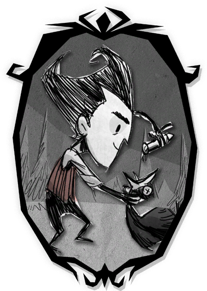

Don't Starve: Shipwrecked est le deuxième DLC de Klei Entertainment, développé en collaboration avec Capy Games. Il est sorti officiellement le 31 mars 2016 et transporte les joueurs dans un archipel tropical rempli d'îles, d'océans et de nouveaux dangers.
Dans cette extension, les joueurs doivent survivre dans un environnement totalement diférent du jeu de base. L'exploration maritime occupe une place centrale, offrant une aventure axée sur la navigation, la découverte de nouvelles terres et la survie en milieu tropical.
Modifications apportées par Shipwrecked
- - Nouvel univers tropical composé d'île, de plages, de jungles et d'océans.
- - Nouveaux biomes comme les plages, les récifs coralliens, les mangroves et les volcans
- - Présence d'événements naturels tels que les tempêtes, les moussons et les éruptions vocaniques.
Différents jeux ou DLC don't starve

Les personnages de Don't Starve possèdent un style visuel unique inspiré des dessins gothiques et de l'univers de Tim Burton. Chaque survivant se distingue par son apparence, sa personnalité et ses capacités spéciales, tout en conservant un design sombre, détaillé et légèrement inquiétant. Du scientifique Wilson à la pyromane Willow, en passant par le puissant Wolfgang ou la mystérieuse Wendy, chaque personnage offre une façon différente d'aborder la survie. Cette diversité encourage les joueurs à adapter leur stratégie tout en découvrant les nombreuses histoires cachées de l'univers du jeu.